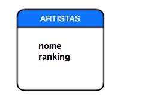

Introdução ao Módulo
Introdução ao Módulo
Finalmente chegou a hora de entrar no maravilhoso mundo dos bancos de dados. Este módulo é dividido em duas partes:
-
SQL e MySQL
-
Sequelize ORM
A primeira parte é focada no aprendizado da linguagem SQL e do mecanismo de banco de dados relacional MySQL. Enquanto o segundo está mais focado em lidar com o pacote Node.js chamado Sequelize, que nos permitirá trabalhar com bancos de dados MySQL de um projeto Express.
A seguir, listamos os objetivos que esperamos atingir ao final desta parte do curso.
Objetivos do módulo
-
Ser capaz de estimar as vantagens de se ter um banco de dados relacional.
-
Decompor um problema e associar a parte de persistência de dados.
-
Projetar o modelo de persistência de banco de dados certo para seu aplicativo.
-
Realizar operações CRUD (Criar, Ler, Atualizar, Excluir) no banco de dados.
-
Compreender o conceito de ORM e sua importância no desenvolvimento de projetos.
-
Implementar instruções SQL puras no Express com Sequelize.
-
Implementar a operação dos métodos de sequenciamento CRUD.
-
Migrar do suporte JSON para o suporte MySQL.
Guia de instalação
Banco de dados geralmente é um assunto muito interessante. Esperamos que as nossas emoções não nos façam perder o rumo e vamos ver se temos tudo o que precisamos para começar.
Para poder trabalhar no módulo de banco de dados, é essencial ter as ferramentas necessárias para manipulá-los. Para isso, vamos requerer dois elementos importantes:
-
Um gerenciador de banco de dados.
-
Uma ferramenta que nos permite manipular o banco de dados.
Como gerenciador de banco de dados, estaremos utilizando o MySQL, um dos bancos de dados relacionais mais utilizados, e como ferramenta para manipulá-lo, o MySQL Workbench, que nos permitirá essa interação até mesmo na forma gráfica.
Ambos devem ser executados localmente em nossos computadores, portanto, devemos instalá-los.
Instalar esses elementos nem sempre é tão fácil, por isso deixamos pronto um guia de instalação para cada plataforma (Windows, Mac e Linux). Lembre que, se algo não der certo, podemos usar o canal de comunicação do seu curso.
Guia de instalações
Linux
Windows
Mac
O que vamos ver nesse módulo
O que vamos ver nesta aula?
Enfim, é hora de entrar no mundo dos bancos de dados. Particularmente desta vez, veremos um banco de dados SQL relacional.
Este tipo de banco de dados nos permite armazenar informações de forma mais consistente e ordenada, daí sua popularidade.
Entre os tópicos que veremos nesta aula, estão os seguintes:
-
Introdução aos bancos de dados
-
O que é uma tabela
-
O que são relacionamentos
-
Tipo de dados
-
Restrições ou constraints
-
Crie, elimine, altere as diretrizes
-
Chaves estrangeiras
Como vamos trabalhar?
Nesta aula, trabalharemos com um banco de dados que teremos que baixar para praticar. Em cada questionário, iremos propor uma tarefa que implica trabalhar com o Workbench e a base de dados baixada, e a seguir copiar e colar os resultados que obtivemos nos questionários Playground.
Mensagem importante
Para dar prosseguimento neste módulo, é de extrema importância a instalação do MySQL. Caso ainda haja alguma dúvida de como fazer a instalação, no tópico ante- rior existem tutoriais disponíveis para todos os sistemas operacionais, não hesite em consultá-los.Como Vamos Trabalhar
Estamos entrando agora no nosso módulo de banco de dados, e para este módulo utilizaremos as seguintes ferramentas:
-
MySQL
-
Mysql Workbench
-
O arquivo musimundos.sql
É muito importante que você faça a instalação dessas duas ferramentas e baixe o arquivo para conseguir continuar acompanhando os conteúdos da melhor forma possível!
Arquivo Provisorio
Introdução a Banco de Dados
Introdução a Banco de Dados
Bancos de dados aqui, bancos de dados ali, mas o que é um banco de dados?
Podemos dizer que é um conjunto de dados pertencentes a um mesmo contexto organizado para uma finalidade específica. Um banco de dados nos permite:
-
Armazenar (adicionar, modificar, excluir) dados
-
Acessar os dados
-
Manipular dados e combiná-los
-
Analisar dados
-
Entre outras coisas
Existem dois tipos de bancos de dados: relacionais e não relacionais. Em particular, aprenderemos sobre um banco de dados relacional, pois nos permite entender em profundidade como os bancos de dados funcionam.
Por sua vez, dentro do mundo dos bancos de dados relacionais, existem várias opções pelas quais podemos escolher. No momento, veremos MySQL, já que é um dos bancos de dados mais populares do mundo e também é fácil de usar.
Vamos ver o que esse banco de dados pode fazer por nós.
Introdução a Banco de Dados
Os bancos de dados são hospedados em um servidor diferente da nossa aplicação web, ou seja, a porta em que vivem é diferente. Isso ocorre desta forma porque um banco de dados nem sempre é consumido por uma aplicação web, pois poderia ser facilmente consumido por outro tipo de serviço.
Ao instalar o MySQL no computador e iniciar o servidor, ele geralmente é habilitado na porta 3306. No entanto, nem sempre é esse o caso. Dependendo de como o MySQL foi instalado, a porta pode ser diferente.
Algo que vale a pena esclarecer é que um banco de dados não é em si um arquivo que podemos manipular, mas sim um conjunto de dados que se relacionam entre si e que fazem parte de um todo.
Os passos a seguir são necessários para importar o arquivo SQL, que você baixou no tópico anterior, dentro do MySQL Workbench e utilizá-lo normalmente.
Iniciando
Após a instalação do Workbench, abra e faça a conexão inicial, fornecendo o usuário e senha configurados.
Se você fez a instalação usando o XAMPP, o usuário é root e o campo senha pode ser deixado em branco.
Importando o arquivo
Após entrar no Workbench, ele terá a seguinte aparência:

O próximo passo no botão File e depois em Open SQL Script.

Em seguida, escolha o arquivo musimundos.sql no local onde foi baixado (geralmente, é a pasta Downloads), que você baixou no tópico anterior. A seguinte tela aparecerá.

Então, para executar o arquivo SQL, basta clicar no botão Execute (que tem o ícone de um raio), conforme a imagem abaixo.

Na parte debaixo dessa tela, no campo 'Output', você verá um log da execução do script. Se você tiver uma saída parecida com a que está no próximo print, então o banco de dados estará criado e pronto pra ser utilizado!

Finalizando
Incentivamos que você busque pela internet mais conteúdos sobre o MySQL Workbench e como usamos essa poderosa ferramenta no dia a dia!
Agora, pode seguir para o próximo tópico de aula!
Quiz
Introdução a Banco de Dados
Quais das seguintes informações precisamos para conectar a um banco de dados?
Em um banco de dados a linguagem SQL permite:
O que é uma chave-primária?
Uma chave primária pode ser formada por:
Tabelas
Tabelas
Certamente, em algum momento, já tivemos contato com uma planilha do Excel. Ela é composta por folhas, e em cada folha encontramos linhas, colunas e células.
Bem, uma tabela dentro de um banco de dados pode ser comparada a uma planilha em um arquivo Excel. Como qualquer tabela que se respeite, possui colunas e cada coluna tem a finalidade de definir um dado particular que será armazenado na referida tabela.
Ao criar uma tabela em nosso banco de dados, devemos ter em mente as informações que desejamos salvar e cuidar para que haja correlação. Por exemplo, se quisermos criar uma tabela para armazenar os dados pessoais de uma pessoa, o mais seguro é que a referida tabela tenha as colunas: nome, email, idade e senha, entre outros. E não seria muito lógico que a coluna "preço" existisse nesta tabela, pois esses dados não têm uma relação direta com as informações mencionadas acima.
Concluindo, uma tabela em um banco de dados busca armazenar as informações que fazem parte de um conjunto de dados. E busca, por sua vez, que todos os registros presentes na referida tabela tenham a mesma estrutura de dados, garantindo assim sua homogeneidade.
Quiz
Questionário Tabelas
Que é um diagrama relacional?
Isso mesmo! Representamos as tabela de um banco de dados no diagrama.
Dado o seguinte diagrama:
Podemos interpretar que:
João deseja adicionar ao seu sistema de banco de dados informações relacionadas com artistas.
Assim, deseja armazenar:
- nome fantasia
- nome
- ranking
- idade
Dado o seguinte diagrama
Quais campos ainda faltam?
Precisamos que o id seja pk para ser o identificador único da tabela
Relacionamentos
Relacionamentos
Em um sistema de banco de dados, é normal termos tabelas relacionadas umas às outras.
Por exemplo, poderíamos ter uma tabela que armazena os dados de uma pessoa e outra tabela que armazena as postagens que uma pessoa gostou.
Como podemos perceber, a tabela que armazena os "likes" não precisa necessariamente dos dados da pessoa. Você só precisará de um pedaço de informação que identifique a pessoa que deu o "like".
Nesse cenário, essas duas tabelas estão relacionadas entre si, pois uma precisa de um dado particular da outra para poder armazenar os registros de forma satisfatória.
Chamamos isso de RELACIONAMENTOS e vale esclarecer que existem vários tipos. Vamos então conhecer um pouco mais sobre estes.
Quiz
QuestionárIo: Relacionamentos
Que tipos de relações existem em um banco de dados relacional?
um para um é um relacionamento válido!
um para muitos é um relacionamento válido!
muitos para muitos é um relacionamento válido!
Utilizando como guia o seguinte modelo, se quisermos modelar que uma pessoa pode ter muitos pets, mas que cada pet tem apenas um dono:

Que ação você propõe para solucionar o problema?
Dessa forma, será possível identificar qual o tutor do Pet
O que é uma foreign key (fk) ?
Imagine que estamos trabalhando no sistema de reservas de um hotel.
E neste mesmo sistema temos o modelo Quartos e o modelo Hóspedes.
Agora queremos adicionar a relação de que um hóspede pode reservar vários quartos e que um quarto pode ser reservado por vários hóspedes.
Utilizando como base os seguintes modelos:

Que mudanças você propõe?
Lembre-se que quando temos um relacionamento de muitos para muitos a solução é SEMPRE criar uma tabela intermediária
Como se interpreta a seguinte relação (mais de uma opção correta):

Tipos de Dados
Tipos de Dados
Como nas linguagens de programação, os bancos de dados podem definir os dados que uma determinada coluna armazenará.
Por exemplo, se quisermos armazenar a idade de uma pessoa, o mais lógico é que essa coluna apenas nos permita salvar números, mas se quisermos armazenar um e-mail, é mais provável que a coluna tenha a capacidade de salvar informações alfanuméricas.
Os tipos de dados em um banco de dados não diferem muito daqueles que já conhecemos, mas existem alguns que são um tanto especiais, então o vídeo a seguir explicará um pouco mais sobre isso.
Quiz
Questionario_tipos_de_dados
Qual desses tipos de dados que não pertence ao MySQL?
Isso aí! String não pertence aos tipos de dados do MySQL
Qual será o resultado se tentarmos entrar com o seguinte horário: 25:00:00?
O que ocorrerá se, em um campo do tipo VARCHAR(15), for passada uma string com 17 caracteres?
Constraints
Constraints
A tradução literal para o português da palavra constraint é: RESTRIÇÃO.
As constraint ou restrições dentro de uma tabela de banco de dados nos permitem gerar um esquema de informações muito mais estável e funcional aos olhos de nossa aplicação.
Por exemplo, uma das restrições mais comuns em uma tabela de pessoas é que as informações armazenadas na coluna de e-mail NÃO PODEM ser repetidas. Algo lógico, certo? Do contrário, o que aconteceria, por exemplo, se várias pessoas pudessem se cadastrar no Instagram com o mesmo e-mail? Seria um tanto complexo identificar quem é quem, não acham?
É por isso que as constraints são tão importantes. Elas nos permitem definir regras que devem ser atendidas para que os dados possam ser armazenados, onde estarão intimamente ligados à nossa lógica de negócios.
Quiz
Questionario_constraints
Supondo que você está desenvolvendo um sistema cujo nome de usuário deve ser único, qual a constraint correta a se utilizar?
Quais dessas não são Constraints? (mais de uma opção correta)
Qual é o problema da tabela a seguir?
id INT PRIMARY KEY AUTO_INCREMENT,
nome VARCHAR(100),
salary DECIMAL(8,2)
)
Create, Drop, Alter
Create, Drop, Alter
Como criamos uma tabela com instruções SQL? E se queremos eliminá-la, como podemos fazer? Além disso, será possível modificar uma tabela existente?
As diretrizes Create, Drop e Alter nos permitirão realizar cada uma dessas ações que, vale a pena mencionar, são bastante comuns no processo de trabalho com bancos de dados.
Quiz
Questionario_create_drop_alter
Supondo que você precisa criar uma tabela de carros para uma locadora, o comando mais correto para isso é:
Para que serve o comando ALTER?
Após finalizar a implementação de um projeto, ficou claro para a equipe que a tabela pontuação não era necessária no final das contas. Qual o comando correto para darmos fim a esta tabela?
Foreign Key
Foreign Key ( Chave estrangeira )
Foreign key, também conhecida como FK ou chave estrangeira, é um tipo de constraint (restrição) que pode ser atribuída a uma coluna de uma tabela. Isso permite que essa coluna armazene como valor um dado particular que se refere aos dados armazenados em uma coluna de outra tabela, daí seu nome: "estrangeiro", por ser "de fora".
As chaves estrangeiras ou FKs permitem relacionar tabelas entre si e o objetivo desta particularidade é conceder maior desempenho na busca de algum dado particular.
Vamos ver um pouco mais sobre esse importante conceito então.
Quiz
Questionario_foreign_key
Dada as tabelas abaixo marque as opções verdadeiras
SESSÕES
FILMES
Diagrama de relacionamentos [ao Vivo]
Diagrama de relacionamentos [ao Vivo]
Acabamos de completar a primeira aula sobre base de dados MySQL. Como sempre, antes da aula ao vivo, recomendamos que você faça uma lista de verificação pessoal das seguintes perguntas para definir o quão claro certos conceitos estão:
-
MySQL: é uma base de dados relacional ou não relacional?
-
Por que o MySQL está sendo executado em um servidor diferente da nossa aplicação web?
-
Com que outro elemento podemos fazer a analogia de uma tabela numa base de dados?
-
Quantas tabelas podem existir numa base de dados?
-
Existe um limite para o número de colunas numa tabela?
-
Quais são os tipos de dados mais comuns de uma base de dados?
-
Como podemos relacionar duas tabelas, uma com a outra?
-
O que são restrições e o que elas nos permitem fazer?
-
A Foreign Key é um constraint (restrição)?
Se conseguirmos responder a todas as perguntas acima, estamos preparados para enfrentar a aula ao vivo que se aproxima. Se, por outro lado, algumas das questões foram difíceis de responder, recomendamos que você volte a rever o material para terminar de reforçar os conceitos.
Sem mais demora, nos vemos na aula!
É o momento de colocar em prática tudo o que aprendemos antes, mas como sempre mencionamos, antes de entrar no código, é bom fazer uma pausa e pensar um pouco sobre o que vamos construir.
Portanto, propomos pensar na arquitetura que a base de dados terá, não a partir de declarações SQL, mas a um nível estrutural, lógico e relacional, a partir da sua conceitualização num diagrama Entidade Relacionamento (ER).
Estes tipos de diagramas são a pedra fundamental de qualquer sistema que procure armazenar informação numa base de dados. Assim, lápis e papel, ou melhor, teclado e mouse, para realizar os desafios que iremos propor a seguir.
É importante lembrar que, uma vez gerado o diagrama ER, podemos ir diretamente para as declarações MySQL e criar a base de dados como planejamos.
Sucesso!
Introdução
O que veremos nesta aula?
Ao longo desta aula, continuaremos a mergulhar no mundo dos bancos de dados relacionais e, em particular, aprenderemos:
-
Como fazer consultas que nos permitem inserir, atualizar e excluir registros de uma tabela.
-
Obter dados de uma tabela de uma forma geral.
-
Obter dados de uma tabela por meio da aplicação de vários filtros de pesquisa.
-
Como limitar a quantidade de resultados gerados por uma determinada pesquisa (algo que é muito bom, se o nosso interesse é fazer um motor de busca com sistema de paging).
-
Para usar algumas funções nativas do MySQL, permitindo filtrar e organizar os dados obtidos de uma forma muito mais eficiente.
Concluindo, é uma aula onde aprenderemos os principais segredos do trabalho com banco de dados. Portanto, mãos à obra e preste muita atenção aos conceitos apresentados aqui.
Insert, update e delete
Insert, update e delete
Quando trabalhamos com tabelas, inevitavelmente precisaremos inserir, atualizar ou excluir algum dado. Estas três funções são realizadas graças às três principais diretrizes que o MySQL tem para este fim:
-
Insert
nos permite adicionardados; -
Delete
nos permite excluirdados; -
Update
nos permite modificardados;
Vamos agora entender como podemos trabalhar com essas funções.
Quiz
Questionário Novos Gêneros Musicais
Do setor comercial da Musimundos, nos informam que vão agregar um novo gênero musical à nossa plataforma. Eles precisam de nós para ajudá-los a carregá-lo em nosso banco de dados. Vamos inserir o id 26 e o ??nome Cumbia na tabela de gênero. Insira sua consulta em maiúsculas.
Where e Order by
Where e Order by
A essa altura, já sabemos que uma tabela em um banco de dados armazena muitas informações. E muitas vezes precisaremos de dados específicos e não de todos os registros existentes naquela tabela.
Por exemplo, em uma tabela de filmes, talvez tivéssemos interesse em ver os lançados a partir de 2015.
Bem, para filtrar os dados dessa maneira, o MySQL tem algumas diretrizes específicas que nos permitem filtrar esses dados e obter apenas o que estamos procurando.
Quiz
Exercício: Clientes
Imagine que precise organizar todos os registros de vendas de intercâmbio (tabela vendas), organizando-os começando pelos que mais deram lucro (coluna valorPago).
Qual query te ajudaria a resolver isso?
URGENTE! Uma banda argentina acabou de lançar um álbum e nos pediu uma lista de clientes hispanófonos (falantes de espanhol) para poder divulgar seu produto. Pedimos que você obtenha uma lista de clientes (tabela clientes)cujo país de origem (coluna paisOrigem) seja Espanha ou Argentina.
Qual consulta ao banco de dados usaria?
Os gerentes estão muito satisfeitos com o seu trabalho! Mas as tarefas todavia não terminam. Agora eles precisam de uma lista com apenas os nomes (coluna nome) dos clientes (tabela clientes) da MusicMundos, ordenada por pais de origem (coluna paisOrigem) e por cidade (coluna cidade) (ambos em em ordem decrescente). Está pronto?
Qual query permite que essa consulta seja realizada com sucesso?
Muito bem, era importante selecionar apenas o campo nome da tabela além de separar as maneiras de ordenar os resultados por vírgula.
Between e Like
Between e Like
Para deixar nossa aplicação mais versátil, provavelmente vamos precisar aplicar algum tipo de filtro em nossas consultas à base de dados. Por exemplo: se quisermos buscar as faturas emitidas desde 2010, ou os filmes que começam com a palavra “Toy”.
As diretrizes Between e Like são fundamentais para podermos fazer esse tipo de consulta, entre outras coisas. Vamos ver como podemos utilizá-las?
Quiz
Exercícios
Repassando o conteúdo que aprendemos sobre o uso do operador LIKE, como podemos realizar uma consulta para gerar uma lista de todas as canções cujos compositores começam com "A"? Assinale as alternativas que apresentam uma consulta correta com o uso do LIKE.
Dica: não se preocupe com maiúsculas e minúsculas, pois LIKE não faz distinção entre elas. Como criaria essa query?
Muito bem! As duas primeiras opções estão corretas porque o LIKE não faz distinção entre letras maiúsculas ou minúsculas.
Seguindo nossa sequência de consultas ao banco de dados da MusiMundos, agora precisamos de uma lista de gêneros que contenham em algum lugar no nome a sigla "ro". Com qual query conseguimos gerar essa lista?
Dica: não se preocupe com maiúsculas e minúsculas, pois LIKE não faz distinção entre elas.
Isso mesmo! % antes e depois de um termo significa que buscamos aqueles caracteres nos valores dos campos.
Você vem realizando um ótimo trabalho nas consultas solicitadas ao banco de dados da MusiMundo!
Antes de finalizarmos essa etapa de consultas, precisamos fazer uma verificação das canções (tabela musicas). Para isso é necessário gerar uma lista das canções que tenham um id entre 10 e 20. Qual query pode gerar essa solicitação?
Muito bem! O correto é separar os valores com a palavra AND. Além disso, devem começar e terminar com os números que queremos incluir nos resultados consultados.
Limit e Offset
Limit e Offset
Imagine que você entrou em um e-commerce de roupas e fez uma pesquisa para encontrar todas as camisas sociais que aquela loja tem disponível. Na aplicação dessa loja existem mais de 200 camisas cadastradas, porém, para não saturar o usuário (você) e o navegador com tantos resultados de uma vez só, a pesquisa exibe apenas 20 camisas por página.
Essa função também pode ser aplicada quando estamos realizando consultas em nossa base de dados, e é muito útil se precisamos manipular centenas de registros. Mas afinal, como podemos fazer isso na prática?
As diretrizes LIMIT e OFFSET nos permitem especificar a quantidade de resultados a serem exibidos e definir a partir de qual registro uma paginação começará. Para conhecer melhor essas duas ferramentas, vamos ao vídeo!
Quiz
Exercícios
Vamos trabalhar todo o conteúdo visto até agora?
A Equipe de Marketing abriu uma solicitação para que consulte na base de dados de sua empresa os 8 primeiros clientes (em ordem alfabética) que possuem mais de 18 anos de idade.
Qual destas queries trará o resultado desejado?
Muito bem! Você conseguiu definir qual a query correta para essa consulta!
Uma equipe do Financeiro abriu uma nova solicitação para que consulte, na base de dados de sua empresa, as 10 últimas faturas emitidas para o Canadá. Qual destas queries trará o resultado desejado para essa consulta?
Muito bem! Você conseguiu definir qual a query correta para essa consulta!
Alias
Alias
Imagine que estamos trabalhando com uma base de dados cujas colunas das tabelas estão em inglês. Mas foi solicitado que os resultados e consultas tragam o nome dessas colunas em português. Como podemos resolver isso?
A diretriz ALIAS nos permite dar apelidos para as colunas e tabelas do nosso banco de dados. Vamos ver como ela funciona?
Quiz
Tipos de Midia - v2.0
A empresa Musimundo decidiu usar o nome original "nome" para a coluna que listava os tipos de mídia (da tabela musicas) no relatório mensal da empresa. Porém, decidiram alterar esse nome e agora foi solicitado que a coluna dos tipos de mídias seja renomeada temporariamente com o seguinte nome: nome_midias. Qual query executa essa ação?
Muito bem! Você selecionou a query correta para renomear a coluna temporariamente no banco de dados.
Funções de alteração
Funções de alteração
Em muitas ocasiões, precisaremos que a nossa consulta traga não somente os dados solicitados, mas também que sejam realizadas algumas operações especiais com esses dados. Por exemplo: unificar os dados das colunas em uma só, ou colocar algum valor padrão a todos os registros que tiverem um valor nulo.
As funções de MySQL nos permitem dinamizar e manipular o resultado da nossa consulta. Mas é importante lembrar que elas nunca alteram os dados originais da base de dados.
Algumas das funções de alteração mais comuns, e as que veremos nesta aula, são:
Quiz
Questionário Consumo
Agora praticando o que aprendemos nas funções de alteração vamos verificar como anda o consumo dos clientes em uma plataforma online. Precisamos utilizar uma função para uma consulta ao banco de dados que considere:
-
Clientes que consumiram menos de R$5,00 tiveram consumo baixo;
-
Clientes que consumiram entre R$5,00 e R$10,00 tiveram consumo moderado;
-
Clientes que consumiram acima de 10,00 tiveram consumo alto.
Muito bem! Você utilizou a função Case criando uma avaliação das condições solicitadas que retornarão as informações da tabela do nosso banco de dados.
Manipulação de dados e consulta [ao vi o]
Para aula ao vivo
É tempo de nos prepararmos para a aula ao vivo, onde, como habitualmente, aplicamos todos os conhecimentos aprendidos nesta aula.
No entanto, para estabelecer uma boa expectativa e aproveitar ao máximo tudo o que preparamos para a aula, deixamos abaixo esta lista de perguntas para testar os conceitos vistos:
-
Numa consulta do tipo SELECT, como podemos seleccionar TODAS as colunas de uma tabela?
-
Qual dos seguintes operadores não trabalharia numa consulta WHERE: LIKE, =, BETWEEN, <>, ON.
-
Quais são os valores possíveis ao implementar a cláusula ORDER BY?
-
O que não devemos esquecer de colocar no WHERE quando estamos fazendo um UPDATE ou DELETE?
-
Para que serve a função de alteração EXTRACT?
-
É obrigatório utilizar o pseudônimo ao realizar uma consulta SELECT?
Se conseguirmos responder às perguntas acima sem problemas, podemos relaxar e esperar pela aula ao vivo. Se, por outro lado, tivermos algumas dúvidas nas respostas, recomendamos a revisão dos vídeos para reforçar os conceitos.
Nos vemos na aula, até lá!
Arquivo escola-db para atividade extra
Introdução
O que vamos ver nesta aula?
É possível que em alguns momentos, seja necessário unirmos tabelas para conseguir trazer os dados que queremos; visto que nossa base de dados é relacional, muitas tabelas se relacionam entre si.
Além disso, também vão existir situações em que vamos precisar unificar registros para ver todos aqueles que se repetem constantemente em uma mesma tabela.
Portanto, quando concluir esta aula, você será capaz de:
-
Unir tabelas para trazer os dados que se relacionam entre elas;
-
Gerar resultados em que os dados que se repetem se unifiquem;
-
Agrupar dados por um determinado nome de coluna;
-
Implementar as funções de MySQL que permitem identificar:
-
Médias;
-
Mínimos;
-
Máximos;
-
Contagem total de dados.
Então, vamos conhecer mais de perto essas ferramentas?